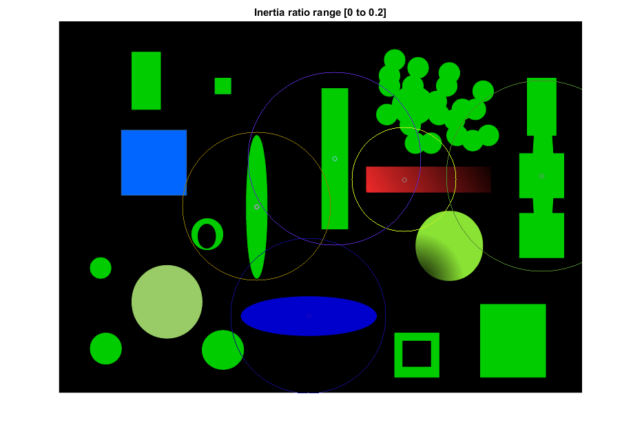
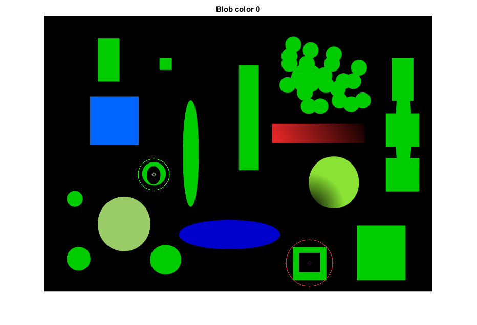
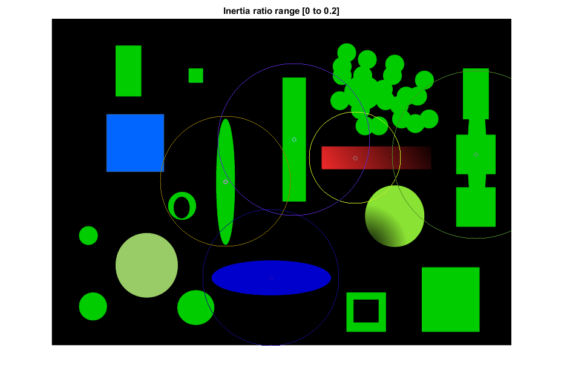
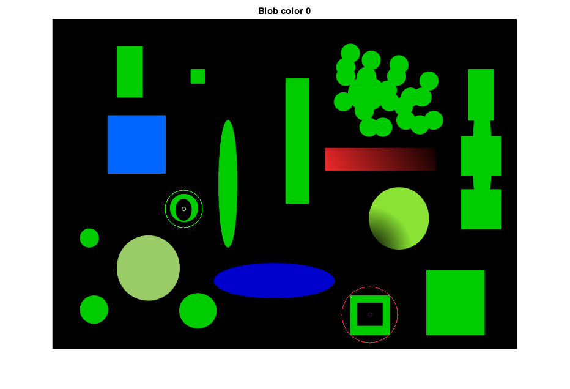

Blob Detection
This program demonstrates how to use BLOB to detect and filter region.
Sources:
Contents
Image
img = cv.imread(fullfile(mexopencv.root(),'test','detect_blob.png'), 'Color',true); img = rot90(img);
Detector Parameters
this is default parameters for cv.SimpleBlobDetector
params = struct(); params.ThresholdStep = 10; params.MinThreshold = 10; params.MaxThreshold = 220; params.MinRepeatability = 2; params.MinDistBetweenBlobs = 10; params.FilterByColor = false; params.BlobColor = 0; params.FilterByArea = false; params.MinArea = 25; params.MaxArea = 5000; params.FilterByCircularity = false; params.MinCircularity = 0.9; params.MaxCircularity = 1e37; params.FilterByInertia = false; params.MinInertiaRatio = 0.1; params.MaxInertiaRatio = 1e37; params.FilterByConvexity = false; params.MinConvexity = 0.95; params.MaxConvexity = 1e37;
we are going to detect blobs with 6 differents param configurations
p = repmat(params, 6, 1);
1st: we want all
p(1).FilterByArea = true; p(1).MinArea = 1; p(1).MaxArea = size(img,1) * size(img,2);
2nd: we want area between 500 and 2900 pixels
p(2).FilterByArea = true; p(2).MinArea = 500; p(2).MaxArea = 2900;
3rd: we want only circular object
p(3).FilterByCircularity = true;
4th: we want ratio inertia
p(4).FilterByInertia = true; p(4).MinInertiaRatio = 0; p(4).MaxInertiaRatio = 0.2;
5th: we want convexity
p(5).FilterByConvexity = true; p(5).MinConvexity = 0; p(5).MaxConvexity = 0.9;
6th: we want blob with gravity center color equal to 0 (dark blobs)
p(6).FilterByColor = true; p(6).BlobColor = 0;
helper function to convert params struct to pairs of name/value options
getopts = @(s) reshape([fieldnames(s), struct2cell(s)]', 1, []);
Detect
blob detectors loop
for i=1:numel(p) % create detector using specified options opts = getopts(p(i)); sbd = cv.SimpleBlobDetector(opts{:}); % detect keypoint kpts = sbd.detect(img); % draw results out = cv.drawKeypoints(img, kpts); for k=1:numel(kpts) out = cv.circle(out, kpts(k).pt, round(kpts(k).size), ... 'Color',randi([0 255],[1 3])); end % show output figure('Name',sprintf('BLOB%d',i)) imshow(out) % create a title to describe current parameters str = {}; if p(i).FilterByArea str{end+1} = sprintf('Area range [%g to %g]', ... p(i).MinArea, p(i).MaxArea); end if p(i).FilterByCircularity str{end+1} = sprintf('Circularity range [%g to %g]', ... p(i).MinCircularity, p(i).MaxCircularity); end if p(i).FilterByColor str{end+1} = sprintf('Blob color %g', p(i).BlobColor); end if p(i).FilterByConvexity str{end+1} = sprintf('Convexity range [%g to %g]', ... p(i).MinConvexity, p(i).MaxConvexity); end if p(i).FilterByInertia str{end+1} = sprintf('Inertia ratio range [%g to %g]', ... p(i).MinInertiaRatio, p(i).MaxInertiaRatio); end title(str) end
 
